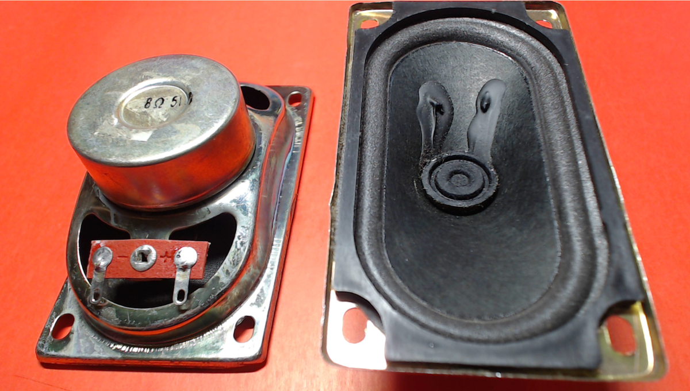

Интернет-радио ESP32 на декодере I2S PCM5102
11 октября 2020
7,9K прочитали
Сегодня мы разберем, на каких модулях можно собрать основу конструкции для воспроизведения потокового аудио из сети Интернет. На простом языке такие устройства обычно называют Интернет радиоприемники, так как они обычно принимают вещание различных онлайн радиостанций, в том числе и тех которые работают в реальном радиоэфире.
Внимание! Перед началом работы необходимо скачать и установить в среду Arduino IDE библиотеку ESP32-audioI2S
Для прототипа устройства для воспроизведения интернет вещания нам потребуются:
Плата ESP-WROOM-32 DevKit v1 на базе микроконтроллера ESP32
ESP-WROOM-32 DevKit v1
Плата PCM5102A audio DAC, Преобразователь: I2S - Аудио. 2 линейных выхода. На ней уже есть гнездо 3.5 мм для подключения наушников.
PCM5102A
Если планируется подключать колонки необходимо будет использовать внешний усилитель низкой частоты - например такой на базе TDA2822M.
На нем уже есть регулятор громкости.
TDA2822M 1 Вт * 2 DC 1,8-12 в 2,0 канала стерео аудио усилитель плата
Два любых аудио-динамика, (наушники если не планируется использование внешнего усилителя)

Динамик DXYD5090N-ALF 8 Ом 5 Вт 90x50 мм
Также используем 2 кнопки чтобы была возможность переключать радиостанций. Дисплей пока подключать не будем - воспользуемся терминалом Arduino IDE
Собираем все на макетной плате. Схема подключения:
Схема подключения PCM5102A к ESP32
Подключения PCM5102A к ESP32 на макетной плате
Для того, чтобы радио заиграло необходимо найти потоки онлайн вещания. Можно поискать такие списки в Интернет, а можно стырить с какого-нибудь сайта где есть онлайн вещание.
Например заходим на https://e-radio.ru/radiostations_1.php#nul
Выбираем станцию которую хотим слушать на нашей esp32
Правая кнопка мыши - просмотр исходного кода страницы (браузер гугл-хром)
Вот она та самая нужная нам ссылка:
https://epdop.hostingradio.ru:8033/europaplus32.mp3
Для проверки вставляем её в окно браузера:
Должно открыться окно с проигрывателем - нажимаем play и если мы все сделали правильно, то должна заиграть радиостанция и можно смело добавлять ссылку в код для платы ESP32.
Соберем пример для приемника 5 интернет радиостанций станций
(ссылки кликабельны)
Европа +
https://epdop.hostingradio.ru:8033/europaplus32.mp3
Авторадио
https://ic7.101.ru:8000/a100
Ретро FM
https://emgspb.hostingradio.ru/retrofmspb64.mp3
Вести FM
https://icecast-vgtrk.cdnvideo.ru/vestifm_mp3_64kbps
Русское радио
https://rusradio.hostingradio.ru/rusradio96.aacp
Вообще на этом сайте можно найти 1200 радиостанций :-) хотя сам я предпочитаю каналы которые вещают только музыку. Например есть хороший ресурс https://101.ru/ - там можно найти все, что угодно :-)
Ссылки мы нашли - осталось написать код - он простой. (не забываем прописать SSID и пароль от домашней сети WI-Fi)
Демонстрацию и прослушивание макета смотрите в и слушайте в этом видео. Код примера скачивайте по этой ссылке
Также вы можете ознакомиться с полным списком статей на моем канале.
Всем удачи!